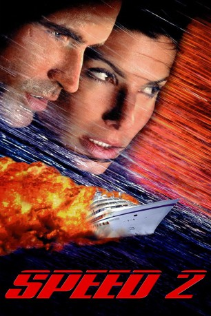

#7428 Speed 2: Cruise Control
 
 IMDB-Wertung: 3.8 / 10
IMDB-Wertung: 3.8 / 10  Metascore: 0
Metascore: 0 
Am Anfang des Films sieht man den Polizisten Alex Shaw während einer wilden Verfolgungsjagd. Seine Freundin Annie ist in derselben Zeit dabei, ihre Führerscheinprüfung zu absolvieren. Zufällig geraten sie aufeinander, als Shaw den verfolgten Verbrecher einholt und festnimmt. Annie erfährt dadurch erst jetzt, dass Shaw bei einer Spezialeinheit der Polizei dient, ein gefährlicher Job, den er bisher vor ihr verheimlicht hatte.Alex will die wütende Annie besänftigen und ihr einen Heiratsantrag machen. Zu diesen Zweck lädt er sie zu einer Kreuzfahrt in der Karibik ein. Zu den Gästen der Kreuzfahrt gehört ebenfalls der verrückte John Geiger, der die elektronischen Systeme des Schiffes entwarf und später entlassen wurde. Er will sich rächen und gleichzeitig vom Schiff Wertsachen stehlen.
Jahr: 1997
Dauer: 125 Minuten
FSK: 12
Land: USA Studio: Twentieth Century FoxTonspuren: DTS - ,
Untertitel:
Auflösung: 1080p (1920x800) Größe: 9318 MB
Genre: Action, Thriller, Abenteuer, Krimi, Liebe
Regisseur:  Jan de Bont
Jan de Bont
Drehbuch: Graham Yost
Soundtrack:
Darsteller:
 Sandra Bullock als Annie
Sandra Bullock als Annie Jason Patric als Officer Alex Shaw
Jason Patric als Officer Alex Shaw Willem Dafoe als John Geiger
Willem Dafoe als John Geiger Temuera Morrison als Juliano
Temuera Morrison als Juliano Brian McCardie als Merced
Brian McCardie als Merced Mike Hagerty als Harvey
Mike Hagerty als Harvey Colleen Camp als Debbie
Colleen Camp als Debbie Lois Chiles als Celeste
Lois Chiles als Celeste Francis Guinan als Rupert
Francis Guinan als Rupert- Tamia als Sheri Silver
- Jeremy Hotz als Ashton
 Enrique Murciano als Alejandro
Enrique Murciano als Alejandro- Jessica Diz als Isabel
 Connie Ray als Fran Fisher
Connie Ray als Fran Fisher Patrika Darbo als Ruby Fisher
Patrika Darbo als Ruby Fisher Kimmy Robertson als Liza, Cruise Director
Kimmy Robertson als Liza, Cruise Director Bo Svenson als Captain Pollard
Bo Svenson als Captain Pollard Mark Adair-Rios als Engine Room Crew Member #1
Mark Adair-Rios als Engine Room Crew Member #1- Tyler Patton als Engine Room Crew Member #3
 Glenn Plummer als Maurice
Glenn Plummer als Maurice- Allison Dean als Marifa
 Joe D'Angerio als Muster Deck Officer #2
Joe D'Angerio als Muster Deck Officer #2 Richard Speight Jr. als 'C' Deck Officer
Richard Speight Jr. als 'C' Deck Officer- Michael O'Hagan als Supertanker Captain
- Robert Herrick als Supertanker Officer #2
- Ivory Broome als Supertanker Crew Member #1
 Tim Conway als Mr. Kenter, Driving Instructor
Tim Conway als Mr. Kenter, Driving Instructor Tommy J. Huff als Diaper Van Driver
Tommy J. Huff als Diaper Van Driver- Jay Lacopo als Real Estate Salesman
- Kathryn Rossetter als Mother at Condo
- Mark Beltzman als Convertible Owner
- Mark Kriski als News Reporter
- Ben Siegler als Policeman
- Jennifer Badger als Passenger #1
- Cheryl Bermeo als Passenger #2
- Jeff Brockton als Passenger #3
- Matthew Taylor als Passenger #6
- Nancy Collet als Passenger #9
 Joe Morton als Lt. Herb 'Mac' McMahon , uncredited
Joe Morton als Lt. Herb 'Mac' McMahon , uncredited- UB40 als Themselves , uncredited
- Christine Firkins als Drew
- Charles Parks als Frank
- Susan Barnes als Constance
- Royale Watkins als Dante
- Alex Montesino als Control Room Chief Engineer
- Xavier Coronel als Engine Room Crew Member #2
- Craig A. Pinckes als Engine Room Crew Member #4
- Mike Robinson als Muster Deck Officer #1
- Joe Foster als Pool Officer
- Christopher Wynne als Supertanker Officer #1
Datei: X:\2-Dilogie(N-Z)\Speed\Speed 2 Cruise Control (1997, FSK12, 1920x800).mkv seit 10.11.2017
Festplatte: HD Collection-2(A-Z)-3(A-M)
 Alle Filme aus Gruppe '2-Dilogie(N-Z)\Speed'
Alle Filme aus Gruppe '2-Dilogie(N-Z)\Speed'
- Speed
- Speed 2: Cruise Control (der aktuelle Film)